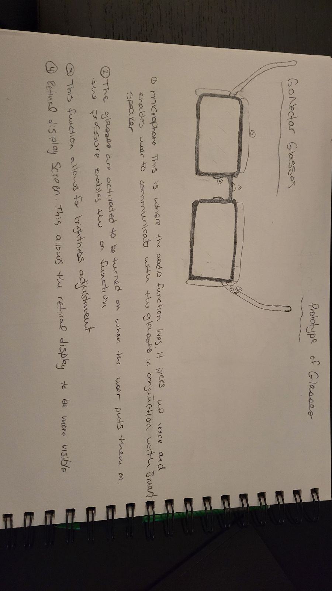
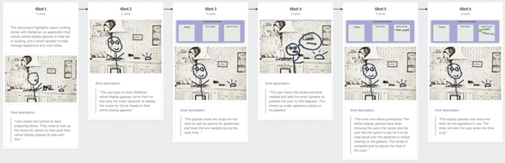

Voice Activated Retinal Display
Introduction
This project consists of a full circle design process of a voiced-based retinal display technology. During this process I will outline the steps taken from start to finish that produced a voice-based prototype experience as well as the rationale for why I chose these options.
Brainstorming
Brainstorming for the start of the prototype innovation began with reviewing the course material and determining the steps I would take to start this project. I first started with some general brainstorming about which option I would choose, and I went with a voice-based cooking product. Next, I wrote down several interface options that I might be able to prototype with. I also brainstormed several product names and decided on GoNectar. After initial brainstorming was complete, I utilized the 10+10 method of getting ideas in my sketch book. I decided on this method because I like the idea of putting ideas to paper that you might not think about. It is really easy to get stuck on a single idea, so I appreciate the out of the box way to create many ideas no matter how farfetched they seem. Admittedly these ideas took longer than the 10 minutes of allotted time, but I feel as though it was very successful in helping me think outside the box and come up with ideas that would not have been my first thought. In fact, the retinal display glasses, which were my ultimate choice going forward, felt awkward and goofy when I first wrote about it. During the process I did stall out on a 10th idea and decided I had enough good ideas to work with. I decided to combine ideas 4, 2 and 3 which included the retinal display glasses, the smart speaker as well as a built in/on counter touch/audio. During the process of storyboarding which is covered next, I found that the third option was not necessary for the scope of this project and I omitted it.
Storyboarding
Below you can find the storyboards I created using Milanote.com. I wanted to show the way in which a user might interact with the product, so I divided to include a kitchen background and I drew the sketches on top of this. I decided on storyboards to help me figure out if my initial ideas had a good flow to them which proved to be helpful, as I will discuss later. Below are my mid-fidelity wireframes for the GoNectar glasses. These are viewed as if you are the glasses wearer and are seeing what shows up on the glasses when you wear them. I highlight the process of following a recipe and utilizing the glasses/voice recognition to help with this process. There are detailed notes on the right side of the screen. They can be viewed here.
Sketch Prototype
After the storyboard was created, I decided to draw a prototype of GoNectar glasses and also decided which avenue to go for further prototyping. I decided to go with a voice-activated prototype of what the UI within the retinal display glasses might look like. During my initial wireframing I thought I would utilize a mobile app, but upon further brainstorming I found that it would be better suited to create a prototype of what the glasses UI might look like with a little of the UI from the mobile application included when/if necessary. Because my focus was on the UI of the glasses and not necessarily the glasses themselves I decided not to create a physical prototype or video for this project. Instead, I devoted my time to creating a true voice activated prototype experience in Adobe XD. In the past I have only prototyped in Figma, so learning XD to be able to utilize the voice-activated component was a welcome challenge.
 Below are my initial sketch ideas for the glasses as well as my mid-fidelity wireframes for the retinal display.
Voice Activated Prototype
Next, I created a voice activated prototype using Adobe XD. It appears the voice activated portion can only be viewed if the user has Adobe, so I have included the link for that as well as a recorded version of myself interacting with the prototype which I uploaded to YouTube, so that it is viewable in the event of technical difficulties. The voice command is started on Adobe by holding in the space bar. The command to start the interaction is to hold space bar and say: “GoNectar open my alfredo recipe”. As the prototype progresses it will ask you questions to which you answer “yes”. I did not offer alternative answers due to the difficulty of learning this prototyping method and time constraints. During the process of creating the high-fidelity prototypes I changed the flow a bit from my original mid-fidelity wireframes due to issues with being able to figure out how to execute those options (being interrupted by a phone call etc). The changes did allow me to stay more on a specific task, which I think in the end was helpful. Below are the Adobe and YouTube links.